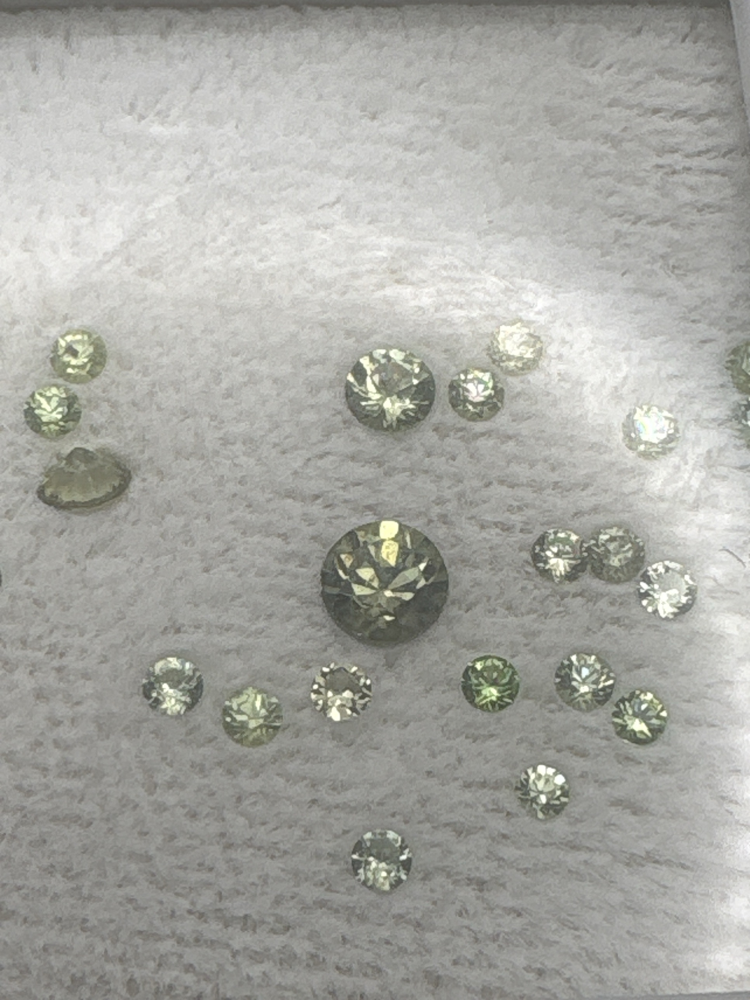

The Gem Drawer › No. 13

A bulk parcel of roughly twenty-plus small green garnets plus one rough fragment.
| Catalogue no. | #13 |
|---|---|
| As labeled | Demantoid Garnet "Grab Bag" (as labeled) - bulk parcel of ~20+ small stones + 1 rough fragment; LOUPE PROMISED ON LABEL BUT NOT PHOTOGRAPHED IN BOX - see notes |
| Shape / cut | Mostly round; 1 rough/uncut fragment |
| Weight | Not recorded |
| Measurements | Not recorded |
| Colour | Pale yellow-green to olive-green, one larger stone darker olive-green |
| Clarity / condition | Not recorded |